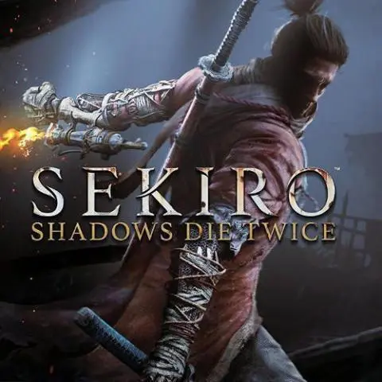
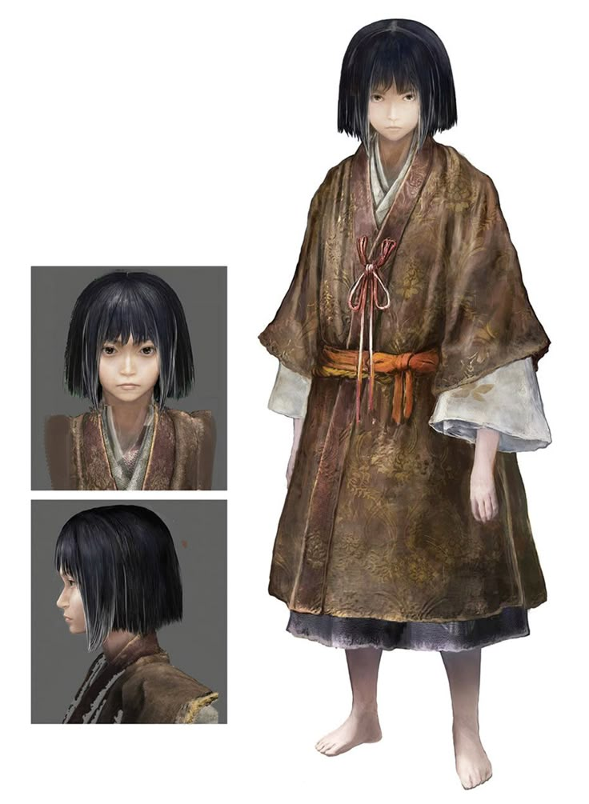
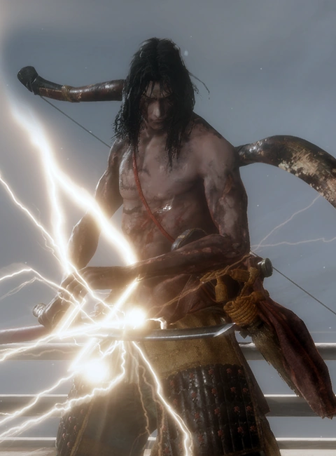
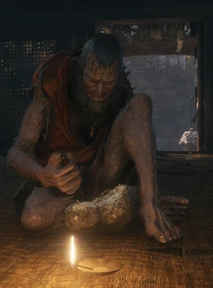

Sekiro: Shadows Die Twice
On FromSoftwaren kehittämä ja
Activisionin julkaisema
toimintaseikkailupeli. Peli on julkaistu 22. maaliskuuta 2019 PlayStation 4:lle, Windowsille ja Xbox
Onelle. Peli voitti vuoden 2019 Game of the Year -palkinnon.
Peli on FromSoftwaren vaikeammasta päästä, vaikka koko peli yhtiö onkin
tunnettu vaikeista peleistään.

Tarina
Peli sijoittuu 1500-luvun Sengoku-ajan Japaniin, jolloin Japanissa
oli klaanien välisiä sotia.
Päähenkilö on Sudeksi (Sekiro) kutsuttu, muinaista Hirata klaania palveleva shinobi, jonka
elämäntehtävä
on
suojella klaanin nuorta prinssi Kuroa. Ashina-vihollisklaani kuitenkin tarvitsee prinssi
Kuron
itselleen pysyäkseen vallassa, joten Ashina-vihollisklaanin soturit kidnappaavat nuoren prinssin,
täten laittaen pelin tarinan käyntiin.
Peli alkaa kun eräänä yönä Susi yrittää pelastaa Kuron murtautumalla Ashina-klaanin
linnakkeeseen,
ja miltei onnistuu tässä kunnes Ashina klaanin prinssi, pelin antagonisti Genichiro Ashina
piirittää Suden ja nuoren Kuron kesken näiden pakoyrityksen. Tästä seuraa Suden ja
Genichiron
välinen miekkailu, joka päättyy siihen, että Susi menettää vasemman kätensä ja kuolee, samalla kun
Genichiro nappaa prinssi Kuron kiinni ja vie tämän takaisin Ashina-klaanin linnakkeeseen.
Tilanteen sivusta nähnyt puuveistäjänä tunnettu buddhalainen munkki raahaa Suden ruumiin
pyhälle
temppelille, mutta kun hän siunaa Suden ruumiin, Suden elintoiminnot yllättäen palaavat.
Kuvia hahmoista



Gameplay
Peli on toimintaseikkailupeli, joka yhdistää toimintaroolipelien,
ja hiiviskelypelien elementtejä. Pelissä ei voi tehdä omaa hahmoa, niin kuin FromSoftwaren
edellisissä peleissä, koska tarinan Susi on pelin päähenkilö. Täten peli on myös täysin
yksinpelattava eikä pelissä ole verkkopeliominaisuutta, ja pelaajahahmon ulkonäön muokkaus on
rajatumpaa kun FromSoftwaren edellisissä peleissä.
Pelissä on myös asentomekaniikka (posture), jossa sekä päähenkilöllä että vihollisilla on
tietty raja iskujen torjumisyrityksille. Mikäli hahmon asento loppuu kesken taistelun, tapahtuu
"asennon murtuminen" (posture break), mikä pudottaa henkilön tasapainosta ja sallii tehdä
kuoliniskun (deathblow), mikä nimensä mukaan tappaa vihollisen.
Vihollisten tekemiä iskuja voi torjua sivuun (parry) ajoittamalla torjumisen tarkasti, jolloin
vastustajan asento murtuu nopeammin. Tämä parry mekaniikka tekee pelistä myös eräänkaltaisen
rytmipelin.
Suurin osa pelin kuvauksesta on lainattu pelin wikipedia sivulta: Sekiro wikipedia